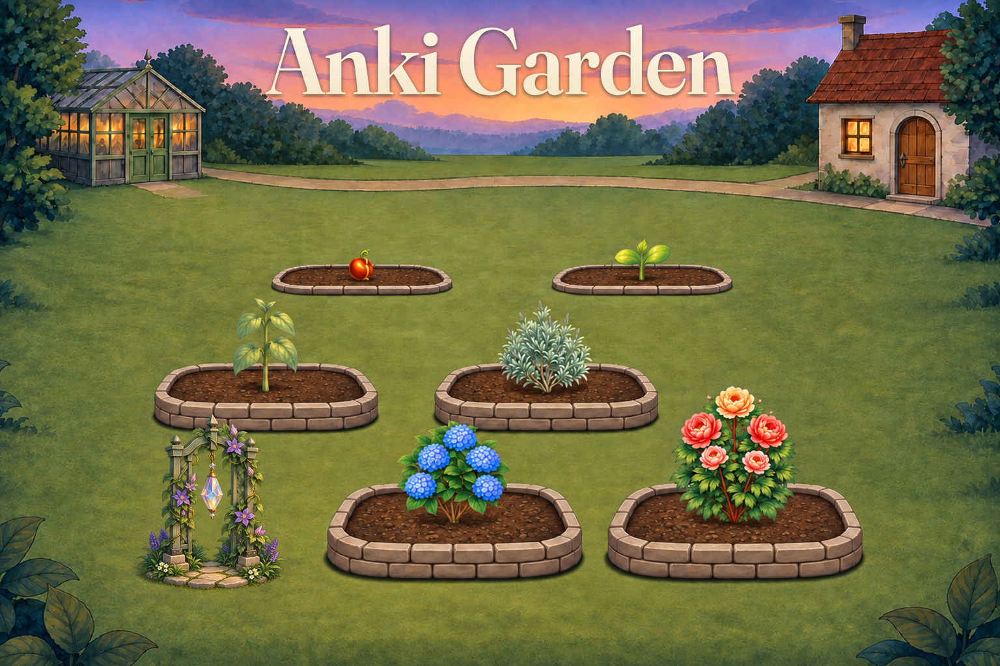
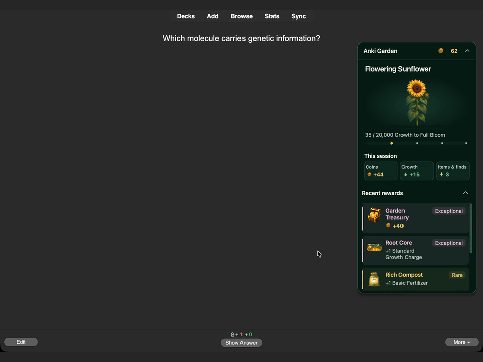

Anki Garden · release drafts
26-second demonstration
Shared video attachment for the three Reddit drafts below.
Anki Garden: Grow a garden while you study
Grow a garden while you study.
Anki Garden is a free desktop Anki add-on that turns card answers into plant growth. Start with a seed, collect new plants, and customize your garden with scenery and decorations.
No watering. No plant decay. Keep what you have earned when you take a break.

What you can do
- Grow ten plant species through six stages, from Seed to Full Bloom, and unlock more garden beds.
- Collect and customize with scenery, decorations, supplies, achievements, and Gardening Trophies.
- Earn rewards while studying, including Coins, Growth, and Garden Finds.
- Choose how much you see. Keep a compact progress tile in the reviewer or expand it for plant details, session totals, and recent rewards.

Current reviewer showcase with prepared rare reward examples, not typical reward frequency.
Made to fit normal Anki study
Again, Hard, Good, and Easy give the same base Growth. Choose your answer according to your recall, not the garden.
Your nurtured plant receives Growth, and other unfinished planted plants receive Shared Growth. Fertilizer and Potions last for card answers rather than elapsed time. Streak achievements unlock permanent Growth bonuses; a broken streak does not remove the highest bonus you have already earned.
Coins are in-game currency, earned through studying and Garden rewards.
Start your garden
- Install using the add-on code below and restart Anki.
- Select Choose a plant on Anki's home screen. Your first starter is free.
- Place it in a bed and choose Nurture.
- Study as usual. Return through Open garden or the reviewer panel.
Open Progress → Activity to view Study rewards and the Finish all cards due today milestone. Use Garden settings to reduce animations or change which panels and summaries appear.
Compatibility and current limitations
Preview testing: Anki 26.08.1 on macOS and Windows 11 ARM (native ARM and emulated x64), at 100% application scaling. Final release acceptance is pending. Physical Intel/AMD Windows hardware and Linux remain unverified.
Desktop only. The Garden interface does not run inside AnkiMobile, AnkiDroid, or the AnkiWeb website. Garden inventory and settings do not synchronize between computers. Synced review history can earn rewards when it reaches desktop; compatibility with a particular sync workflow still depends on the tested build.
Stored Growth is saved but cannot be spent in this version. Compatibility with other add-ons may vary. The first study-history update can take longer with a large collection.
Price, licensing, and development
Price: Free.
Source-code license: AGPL-3.0-or-later
Artwork and third-party asset terms: Project artwork: CC BY 4.0, to the extent of rights held by the project; third-party material retains its own terms.
Developed and maintained by Caleb Meadows. Development is substantially AI-assisted with Codex; I direct the project and am responsible for reviewing changes, release validation, and maintenance.
Artwork includes AI-generated assets. Third-party assets retain their own terms.
Questions and bug reports are welcome in the comments on this listing.
Source and support: GitHub.
r/Anki
I made Anki Garden: grow a garden while you study (free desktop add-on)
Preview video attachment
I wanted something in Anki that felt like building a collection rather than just bringing the due count back to zero.
I made Anki Garden, a free desktop Anki add-on. Your card answers grow plants, earn Coins, and unlock more of the garden.
Install: AnkiWeb
Add-on code: {{ANKIWEB_CODE}}
There are ten plant species with six growth stages, plus scenery, decorations, supplies, and achievements. The reviewer can stay as a small progress tile or expand to show your plant and recent rewards.
The part I cared about most: it shouldn't become another thing you have to look after. Plants don't need watering or decay when you take a break. Earned streak Growth bonuses stay unlocked even after the streak ends.
Again, Hard, Good, and Easy give the same base Growth, so you should still answer based on what you actually remembered. Fertilizer also lasts for card answers, not a timer running while you're away. Animations and reward summaries can be adjusted in settings.
Price: Free. Coins are in-game currency.
Source-code license: AGPL-3.0-or-later
Artwork and third-party asset terms: Project artwork: CC BY 4.0, to the extent of rights held by the project; third-party material retains its own terms.
Preview testing: Anki 26.08.1 on macOS and Windows 11 ARM (native ARM and emulated x64), at 100% application scaling. Final release acceptance is pending. Physical Intel/AMD Windows hardware and Linux remain unverified. The Garden interface runs on desktop, and Garden inventory and settings do not sync between computers.
Development was substantially AI-assisted with Codex. I direct the project and am responsible for reviewing changes, validating releases, and maintaining it.
Artwork includes AI-generated assets. The previews use a prepared garden and rare reward examples, not typical reward frequency. The plant-growth montage is a stage showcase, not real-time growth. Stored Growth is saved but cannot be spent in this version.
Source and support: GitHub. Questions and bug reports are welcome in the comments. Was anything confusing when you started your first plant?
r/medicalschoolanki
I made Anki Garden: grow a garden while you study (free desktop add-on)
Preview video attachment
I wanted something in Anki that felt like building a collection rather than just bringing the due count back to zero.
I made Anki Garden, a free desktop Anki add-on. Your card answers grow plants, earn Coins, and unlock more of the garden.
Install: AnkiWeb
Add-on code: {{ANKIWEB_CODE}}
There are ten plant species with six growth stages, plus scenery, decorations, supplies, and achievements. The reviewer can stay as a small progress tile or expand to show your plant and recent rewards.
The part I cared about most: it shouldn't become another thing you have to look after. Plants don't need watering or decay when you take a break. Earned streak Growth bonuses stay unlocked even after the streak ends.
Again, Hard, Good, and Easy give the same base Growth, so you should still answer based on what you actually remembered. Fertilizer also lasts for card answers, not a timer running while you're away. Animations and reward summaries can be adjusted in settings.
Price: Free. Coins are in-game currency.
Source-code license: AGPL-3.0-or-later
Artwork and third-party asset terms: Project artwork: CC BY 4.0, to the extent of rights held by the project; third-party material retains its own terms.
Preview testing: Anki 26.08.1 on macOS and Windows 11 ARM (native ARM and emulated x64), at 100% application scaling. Final release acceptance is pending. Physical Intel/AMD Windows hardware and Linux remain unverified. The Garden interface runs on desktop, and Garden inventory and settings do not sync between computers.
Development was substantially AI-assisted with Codex. I direct the project and am responsible for reviewing changes, validating releases, and maintaining it.
Artwork includes AI-generated assets. The previews use a prepared garden and rare reward examples, not typical reward frequency. The plant-growth montage is a stage showcase, not real-time growth. Stored Growth is saved but cannot be spent in this version.
Source and support: GitHub. Questions and bug reports are welcome in the comments. Was anything confusing when you started your first plant?
r/GetStudying
I made Anki Garden: grow a garden while you study (free desktop add-on)
Preview video attachment
I wanted something in Anki that felt like building a collection rather than just bringing the due count back to zero.
I made Anki Garden, a free desktop Anki add-on. Your card answers grow plants, earn Coins, and unlock more of the garden.
Install: AnkiWeb
Add-on code: {{ANKIWEB_CODE}}
There are ten plant species with six growth stages, plus scenery, decorations, supplies, and achievements. The reviewer can stay as a small progress tile or expand to show your plant and recent rewards.
The part I cared about most: it shouldn't become another thing you have to look after. Plants don't need watering or decay when you take a break. Earned streak Growth bonuses stay unlocked even after the streak ends.
Again, Hard, Good, and Easy give the same base Growth, so you should still answer based on what you actually remembered. Fertilizer also lasts for card answers, not a timer running while you're away. Animations and reward summaries can be adjusted in settings.
Price: Free. Coins are in-game currency.
Source-code license: AGPL-3.0-or-later
Artwork and third-party asset terms: Project artwork: CC BY 4.0, to the extent of rights held by the project; third-party material retains its own terms.
Preview testing: Anki 26.08.1 on macOS and Windows 11 ARM (native ARM and emulated x64), at 100% application scaling. Final release acceptance is pending. Physical Intel/AMD Windows hardware and Linux remain unverified. The Garden interface runs on desktop, and Garden inventory and settings do not sync between computers.
Development was substantially AI-assisted with Codex. I direct the project and am responsible for reviewing changes, validating releases, and maintaining it.
Artwork includes AI-generated assets. The previews use a prepared garden and rare reward examples, not typical reward frequency. The plant-growth montage is a stage showcase, not real-time growth. Stored Growth is saved but cannot be spent in this version.
Source and support: GitHub. Questions and bug reports are welcome in the comments. Was anything confusing when you started your first plant?